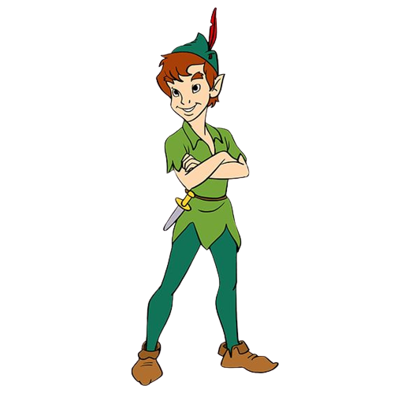
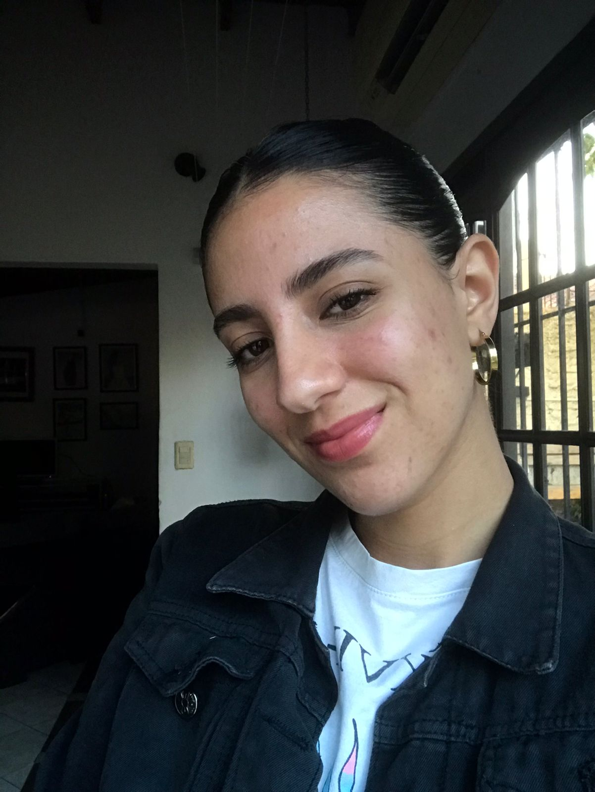

Creadoras del trabajo final
NAHIR NEGRO
Ama diseñar acompañada de buena musica y unos mates. Nacio el 16 de octubre y tiene 20 años. Vive en Quilmes. No hay mejor música para ella que no sea rock nacional y WorshipMusic. Tambien ama
BRENDA REYES
Ama diseñar acompañada de buena musica y unos mates. Nacio el 16 de octubre y tiene 20 años. Vive en La Plata desde siempre. No hay mejor música para ella que no sea rock nacional y WorshipMusic. Tambien ama tocar el piano y cantar en su iglesia.
 >
>